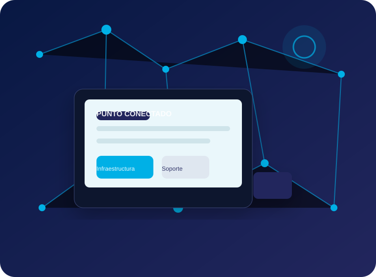
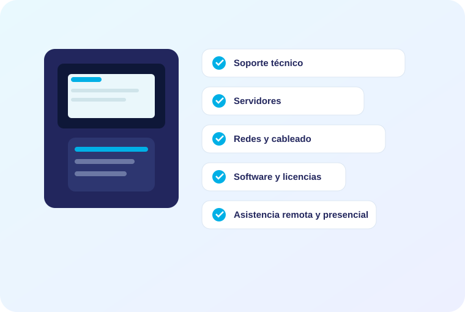
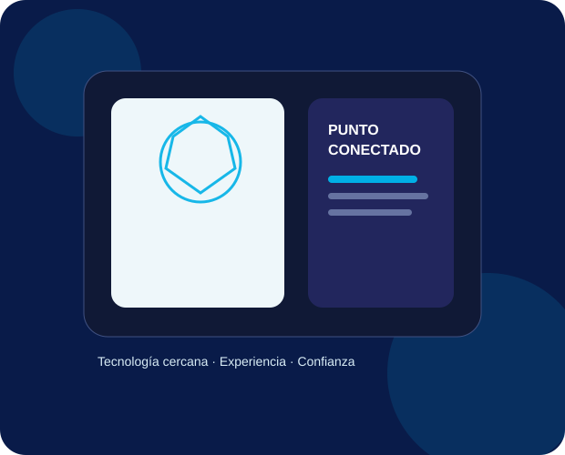

⚙
Soporte técnico
Reparación de hardware, limpieza, optimización, diagnóstico de fallas y mantenimiento preventivo.
Soluciones informáticas integrales para que tu infraestructura funcione, tus datos estén protegidos y tu equipo pueda trabajar sin interrupciones.
Asistencia remota y presencial
Planes periódicos adaptados a la necesidad de cada cliente.

Centralizamos soporte, infraestructura, redes, software y continuidad operativa en un mismo equipo.

Diagnóstico, reparación, mantenimiento y optimización de equipos y software.
Implementación, configuración, monitoreo y mantenimiento de servidores físicos y virtuales.
Diseño, armado, administración y documentación de redes cableadas e inalámbricas.
Instalación y configuración de sistemas operativos, ofimática, antivirus y aplicaciones.
Implementación de soluciones de respaldo de archivos con Acronis y prácticas de recuperación.
Soporte rápido y efectivo, con atención programada o bajo demanda según el plan contratado.
Reparación de hardware, limpieza, optimización, diagnóstico de fallas y mantenimiento preventivo.
Instalación, configuración y administración de servidores físicos, virtuales, servicios y respaldos.
Switches, routers, Wi-Fi, cableado estructurado y ordenamiento de infraestructura.
Windows, paquetes de ofimática, Kaspersky, Acronis y aplicaciones necesarias para tu operación.
Backup, recuperación y controles básicos para reducir el impacto de incidentes tecnológicos.
Visitas y tareas programadas para mantener los equipos actualizados y prevenir problemas.
Resolución de incidentes sin traslado cuando el problema puede ser atendido a distancia.
Implementaciones, migraciones, puesta en marcha de infraestructura y necesidades específicas.
Punto Conectado también es el punto de partida para nuestras aplicaciones orientadas a necesidades concretas.
Gestión de socios, planes, clases, turnos y seguimiento para gimnasios y centros de entrenamiento.
Una línea de aplicaciones para seguimiento de tareas, activos, procesos y trazabilidad.
Podés combinar puestos de trabajo y servidores. La propuesta final se ajusta a la cantidad de equipos, frecuencia y alcance del mantenimiento.
Seguimiento frecuente para mantener la operación bajo control.
Cobertura completa para empresas que buscan continuidad y previsibilidad.
Para necesidades particulares, infraestructura mixta o alcances especiales.

Punto Conectado nace con una idea simple: la tecnología debe ser una herramienta y no un problema que detenga la operación.
Trabajamos con empresas y emprendimientos que necesitan soporte confiable, infraestructura ordenada y soluciones que puedan crecer junto con el negocio. Combinamos experiencia en soporte, servidores, redes, seguridad, software y atención cercana para resolver desde incidentes cotidianos hasta proyectos de implementación.
Nuestro enfoque parte del relevamiento de la realidad de cada cliente. A partir de ahí definimos prioridades, documentamos lo necesario y proponemos un esquema de mantenimiento acorde al tamaño y las necesidades de la organización.
Respondemos consultas de soporte, infraestructura, software, planes de mantenimiento y proyectos especiales.
Podés contactarnos por el canal que te resulte más cómodo.
Instagram@puntoconectado.com WhatsApp+54 9 2281 510754 Emailinfo@puntoconectado.com.arCompletá el formulario y prepararemos el contacto inicial.